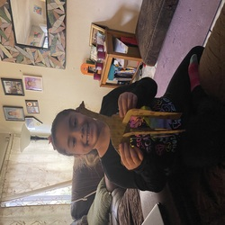
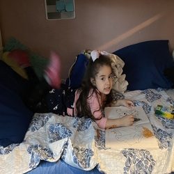
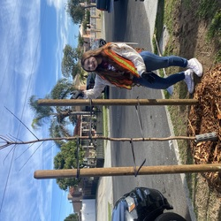
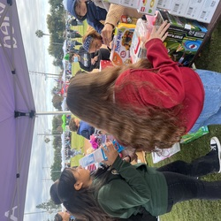

I am a compassionate family babysitter with extensive hands-on experience caring for children of all ages. Through this journey, I have developed a strong ability to create fun, engaging, and educational activities, consistently prioritizing child safety and well-being. My background in childcare has equipped me with the essential tools to foster positive relationships with families, built on reliable and effective communication. Over the years, I have garnered a proven track record in leadership and childcare, embracing open communication and maintaining organized, clean environments. As I continue to work with children, I have come to appreciate the diverse needs of children at various developmental stages, understanding that each child’s unique attributes require tailored approaches to care and education.
One of the highlight experiences in my career was the opportunity to intern at the Center for Early Childhood Education at the University of California, Riverside. I dedicated 169 hours of volunteering during this internship, where I gained invaluable insights into the realm of early childhood education. A key aspect of my role involved supervising children aged 3 to 4, which allowed me to assist lead teachers with arts and crafts and monitor children during playtime. This hands-on experience was both enriching and rewarding, as it enabled me to sharpen my skills and build meaningful relationships with both the children and educators. Engaging in a variety of activities, from lesson planning to organizing educational games, equipped me with creative strategies that enhance learning. I firmly believe that education should be joyful, and I strive to make every interaction an enjoyable opportunity for growth and exploration.
Throughout my internship, a significant focus was placed on promoting inclusivity, which I found to be enlightening and essential in fostering a nurturing environment. Working with children from diverse backgrounds has broadened my perspective, emphasizing the necessity of recognizing and addressing each child's unique needs. I learned that creating an inclusive environment is not solely about acceptance; it is about celebrating differences, which cultivates a welcoming atmosphere where all children can thrive. I also recognized the importance of building strong relationships with families, as this enhances a child's educational experience and promotes their overall development. As I advance in my journey within the field of childcare, I remain eager to refine my skills and adapt to new challenges. The insights gained from both my internship and my experiences as a babysitter have solidified my passion for working with children. I am committed to making a meaningful impact in their lives, supporting their growth in enriching and effective ways. Looking to the future, I am excited to utilize my knowledge and skills to create engaging and supportive environments that inspire every child I care for to feel secure, valued, and empowered to reach their full potential. Each child's unique journey is a privilege for me to be a part of, and I am dedicated to ensuring they navigate their formative years with confidence and joy.
• Assisted children with their homework and did arts & crafts
• Performed light housekeeping duties such as laundry and tidying up common areas used by the kids.
• Administered basic first aid if necessary in case of minor injuries or illnesses.
• Helped care for my environment by planting trees and cleaning up beaches.
• volunteered at many events in my community, including toy drives, banquets, health fairs, turkey giveaways, and holiday parades..
• Designed promotional materials, such as flyers and posters, to advertise club activities.
• Helped supervise children inside calssroom and during outside play time
• Set up for meal times
• Interacted with the children in various activities, such as games, crafts, and outside play, to keep the children entertaine



